Prayer Guide
Prayer is one of the most treasured skills as it is one of the easiest skills to train.
Bones
Normal bones can be found by killing a variety of monsters. They are lowest of the experience gains out of all the bone types.
Bat BonesBat Bones give the same amount of experience as regular bones but they are dropped by bats.
Monkey BonesMonkey Bones give the same amount of experience as regular bones but they are dropped by monkeys.
Big BonesBig bones give a big amount of experience rate compared to regular bones and are dropped by giants.
Jogre BonesJogre Bones are similar to big bones but dropped by Jogres.
Ourg Bones 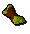Ourg Bones in 2009scape are only dropped currently by General Graardor once more options are added more will be added to this. They give a total of 140xp on x1 xp.
Baby Dragon BonesBaby Dragon bones are dropped by baby red dragons, baby black dragons, and baby blue dragons, or up to 226 at a time from looting dragon impling jars. They give 105 prayer xp on x1 xp or 120 prayer xp using ectophial on x1 xp.
Dragon Bones 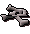Dragon bones are dropped by all adult dragons, or up to 188 at a time from looting dragon impling jars. They give 72 prayer xp on x1 xp or 120 prayer xp using ectophial on x1 xp.
Skeletal Wyverin Bones 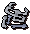Skeletal Wyverin Bones are dropped by Skeletal Wyverins. They give a total of 50xp when buried on x1xp rate.
Altar 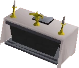
Altars can be found all around 2009scape and are used to restore a player's prayer points.
Guilded Altar 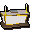Guilded altars are a way of gaining crazy good prayer experience. They can be built in a Player owned house by offering bones to the gods.
| Prayer Icon |
Prayer |
Level needed |
Effect |
| Thick Skin | Level 1 | +5% Defence Bonus | |
| 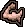 | Burst of Strength | Level 4 | +5% Strength Bonus |
| 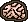 | Clarity of Thought | Level 7 | +5% Attack Bonus |
| 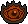 | Sharp Eye | Level 8 | +5% Ranged Bonus |
| 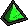 | Mystic Will | Level 9 | +5% Magic Bonus |
| Rock Skin | Level 10 | +10% Defence Bonus | |
| Superhuman Strength | Level 13 | +10% Strength Bonus | |
| 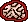 | Improved Reflexes | Level 16 | +10% Attack Bonus |
| Rapid Restore | Level 10 | +2% Restore to everything but HP & Prayer | |
| Rapid Heal | Level 22 | +2% Restore to Hp | |
| 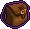 | Protect Item | Level 25 | Players keep 1 extra item when they die. |
| Hawkeye | Level 26 | +10% Ranged Bonus | |
| 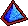 | Mystic Lore | Level 27 | +10% Magic and defence bonus |
| Steel Skin | Level 28 | +15% Defence Bonus | |
| 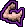 | Ultimate Strength | Level 31 | +15% strength bonus |
| 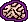 | Incredible Reflexes | Level 34 | +15% attack bonus |
| Protect from Summoning | Level 35 | Protect from familiars | |
| 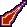 | Protect from Magic | Level 37 | Protects Against magic Attacks |
| 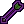 | Protect from Missiles | Level 40 | Protects against ranged attacks |
| 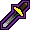 | Protect from melee | Level 43 | Protects against melee attacks |
| Eagle Eye | Level 44 | +15% Ranged Bonus | |
| 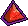 | Mystic Might | Level 45 | +15% Magic Attack and Defence Bonus |
| Retribution | Level 46 | Deals damage up to 25% of your prayer level to nearby targets upon your death. | |
| Redemption | Level 49 | Heals the player if they fall below 10% health | |
| Smite | Level 52 | Removes 1 prayer point from an enemy for every 4 damage inflicted on the enemy. | |
| Chivarly | Level 60 | +15% Attack, +18% Strength, +20% Defence bonus | |
| Piety | Level 70 | +20% Attack, +23% Strength, +25% Defence bonus |
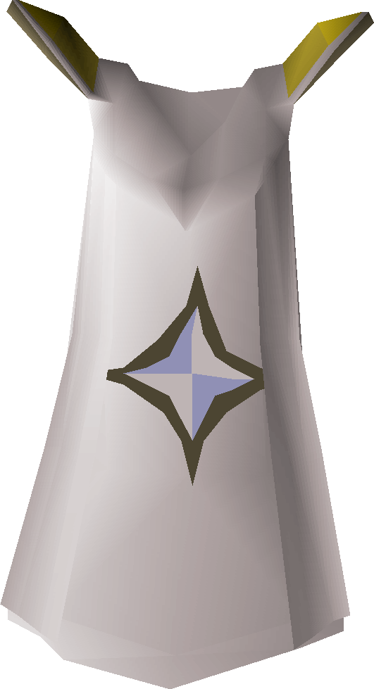 Skill Mastery
In 2009scape, we had decided in the polls that we would add Skill Cape Perks in the game. You are able to find more perks by clicking here. It has been decided that the Prayer Skill Cape that would have the following perk: Due to your close affinity with the divine, each tick where prayer points would be drained while using a prayer you have a 10% chance to not lose prayer points that tick.
Note: If you see something not on this page that currently is in-game please let Summer know.